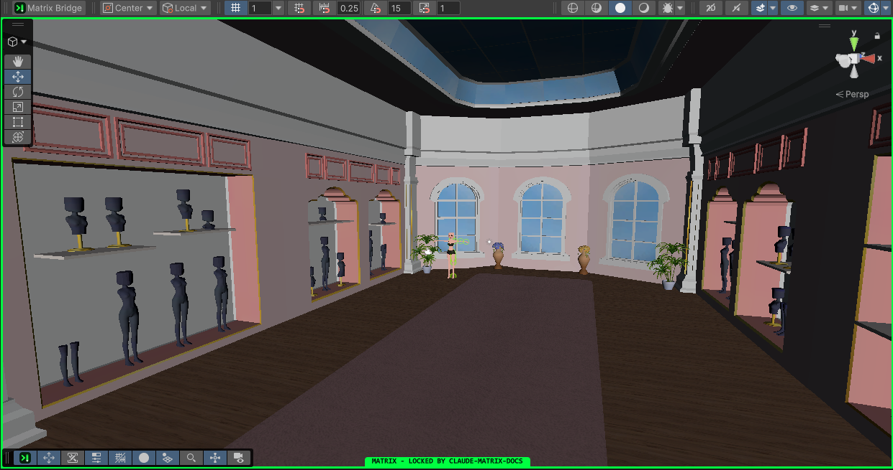
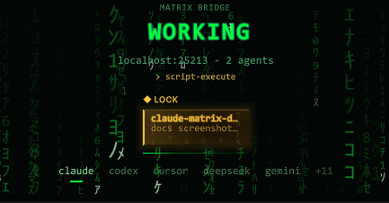

Everyday use
Several agents, one Editor
You can run several client sessions against one Unity Editor. They take turns through the editor lock, which the Matrix server keeps, so one session's compile never lands in the middle of another's play test.
How turns work#
- Read-only tools always run, for every session, at any time: queries, screenshots, the Console, status tools.
- Tools that change the Editor wait their turn. A session claims the Editor with
editor-lock-acquirefor one burst of work (a compile, one play session, a batch of edits) and gives it back witheditor-lock-release. - Others queue. While one session holds the Editor, another session's changing tools wait in a first-come line, and the answer says who holds it and for what.
- No claim needed for a quick change. A changing tool called without a claim takes one for itself, freed after 30 idle seconds.
Your client handles all of this. The matrix-shared-editor skill teaches it when to claim and release.
Subagents take turns too#
With Claude Code, every subagent is an agent of its own: it claims the Editor and waits in line for itself, and the Bridge window shows it as its own car, marked >. Two subagents of one session can no longer change the Editor at the same time.
- It needs a hook. The Editor adds it to
.claude/settings.local.jsononce it is linked to a server that supports it. Start a new Claude Code session afterwards; a session that was already running keeps the old behavior. - Without the hook, and with other clients, a session and all its subagents count as one agent, as before. The holder's tooltip in the Bridge window says so.
- A subagent that ends frees its claim and leaves the line at once.
- A main agent that holds the Editor and waits for a subagent it started passes its claim to that subagent when it asks, so the two never wait for each other.
Work that must follow other work#
A play test should start only after the agent that edits and compiles has finished. Tell the agents the order instead of timing it yourself: give the first one a name, and let the second one wait for that name.
- Name the agent others wait forIt claims with
owner: "coder", or says its name before its first claim witheditor-lock-statusandowner. - Queue the follower with
afterIt callseditor-lock-acquirewithafter: ["coder"]. It joins the line at once and its car readsafter coder. - It gets the Editor when the first one has finishedThat is when the subagent ends, its session closes, or it calls
editor-lock-releasewithdone: true. Until then it holds nobody back.
To let a waiting agent go ahead yourself, click its car and choose Let ... go now. A name that nobody uses within 2 minutes fails the claim with the list of names known at that moment.
Seeing who holds the Editor#
While a session holds the lock, every Scene view gets a green frame, tagged at the bottom with the holder's name:


The Bridge window shows the same holder as a card under the status: the client's name, its task and how long it has held the Editor. The tooltip adds the client, the session and when an idle claim will be freed. With no claim the line reads editor free.


When you want the Editor yourself#
The lock orders sessions among themselves; it does not stop you from clicking. To work in Unity without surprises:
- Check the line under the statusIf it reads
editor free, the Editor is yours. - Pause the queueIn the Bridge window, click the holder's line and choose Pause the queue, or use the pause button of the waiting list. Waiting sessions keep their place; the current holder finishes its burst.
- Resume when you are doneChoose Resume the queue the same way.
When you press Play yourself while nobody holds the lock, the queue pauses on its own until you stop. While sessions wait, the Bridge window lists them in order with their task and waiting time.
The lock line menu also has Free the claim of ... to release a session that is stuck, and Copy details for a bug report.
When a claim ends#
| Event | Result |
|---|---|
The session calls editor-lock-release | Freed at once; the next in line gets it. |
| The session closes, or the subagent that holds it ends | Freed at once. |
| 10 minutes without a call from the holder | Freed. Only 2 minutes while others wait, except inside a play session the holder started. |
| A claim older than 15 minutes | Every result the holder gets ends with an Editor lock: line asking it to release and claim again. |
| You click Free the claim of ... | Freed at once. |
Reading an idle Editor does not keep a claim alive. Reads keep it alive only while the Editor compiles, reloads, imports, builds, runs tests or plays a session the holder started.
When the Editor is busy for long#
If a session needs the Editor but it is taken for a long time, it can write its play test as a test case under TestCases/ and stop. A later session runs the pending cases when the Editor is free. Ask your client to "run the pending test cases".
Temp/agent-editor-lock/lock.json. A tool that still claims through that file blocks other claims while its file is live.